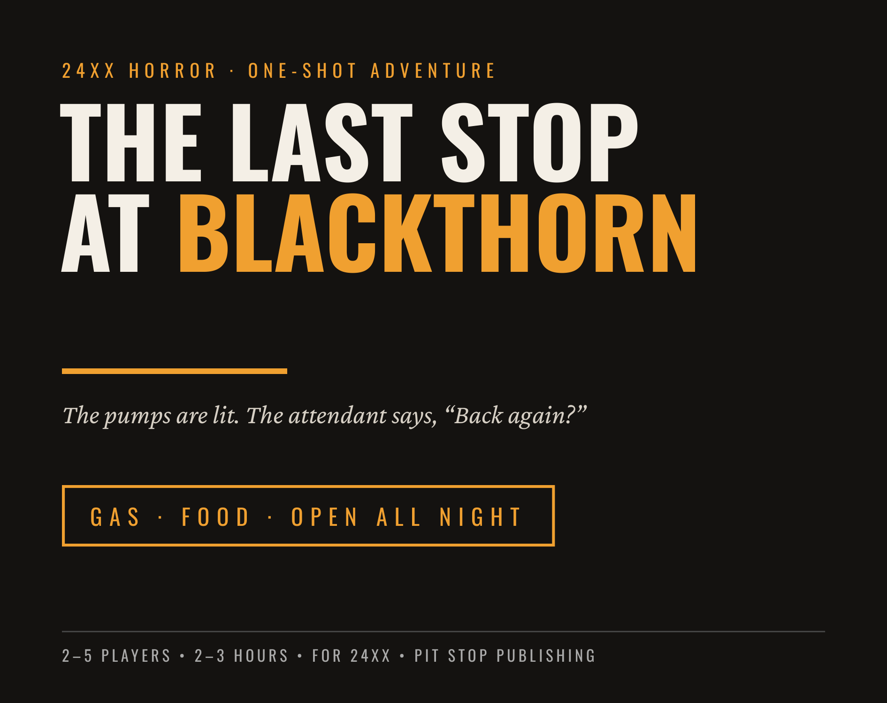
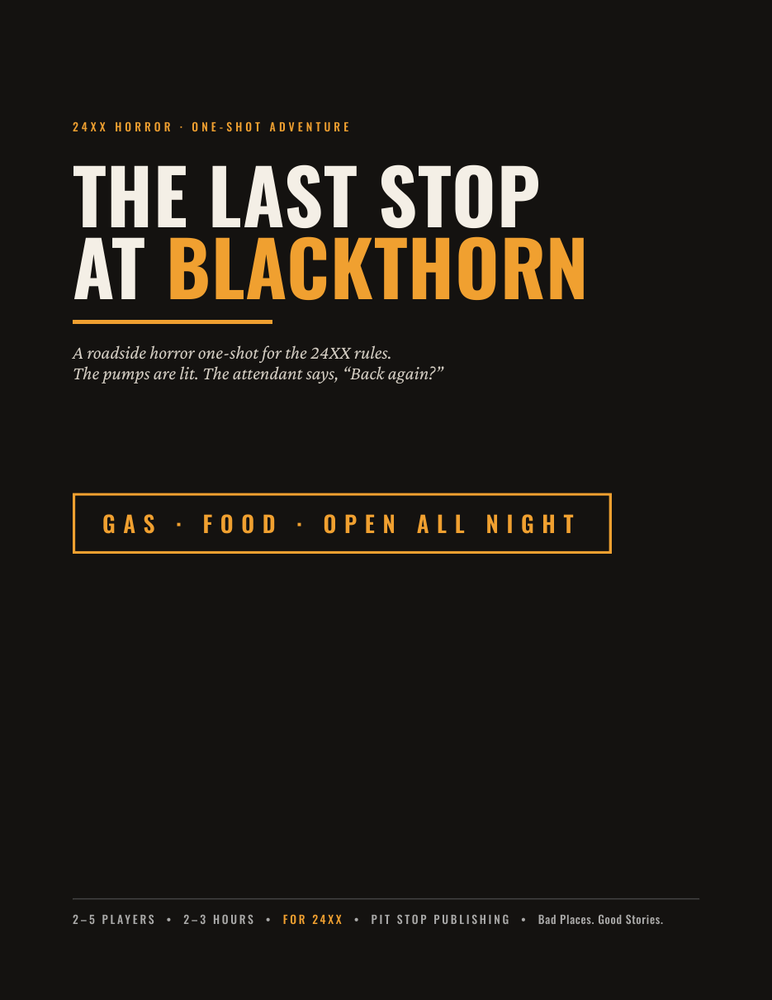
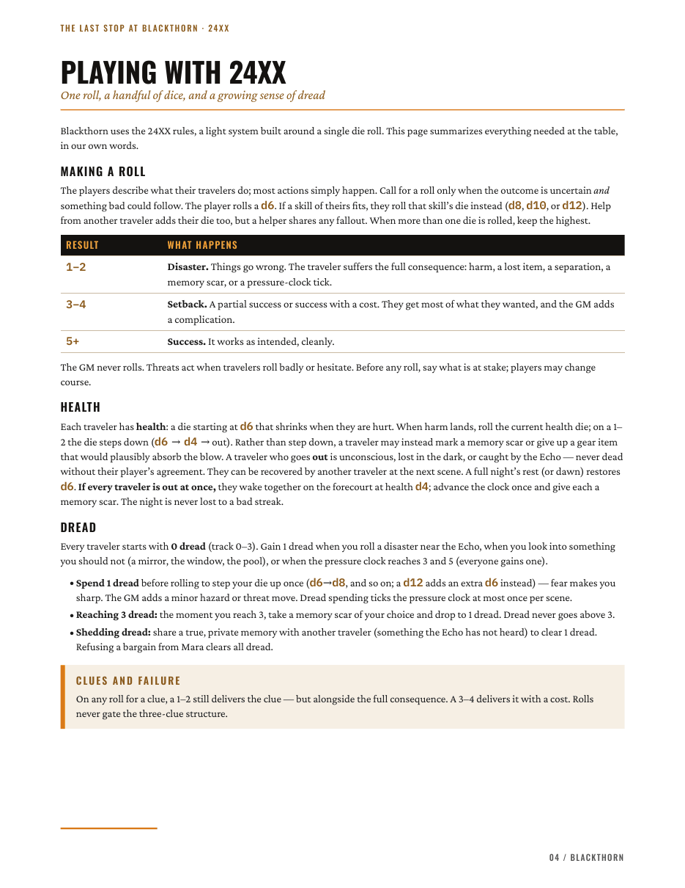
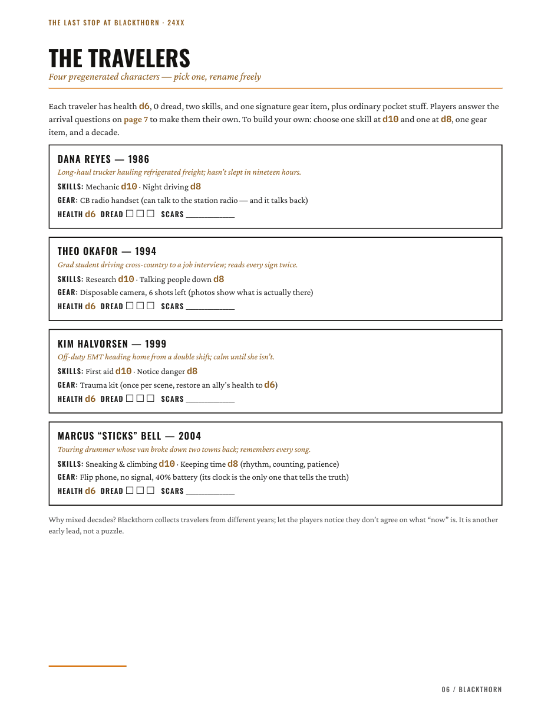
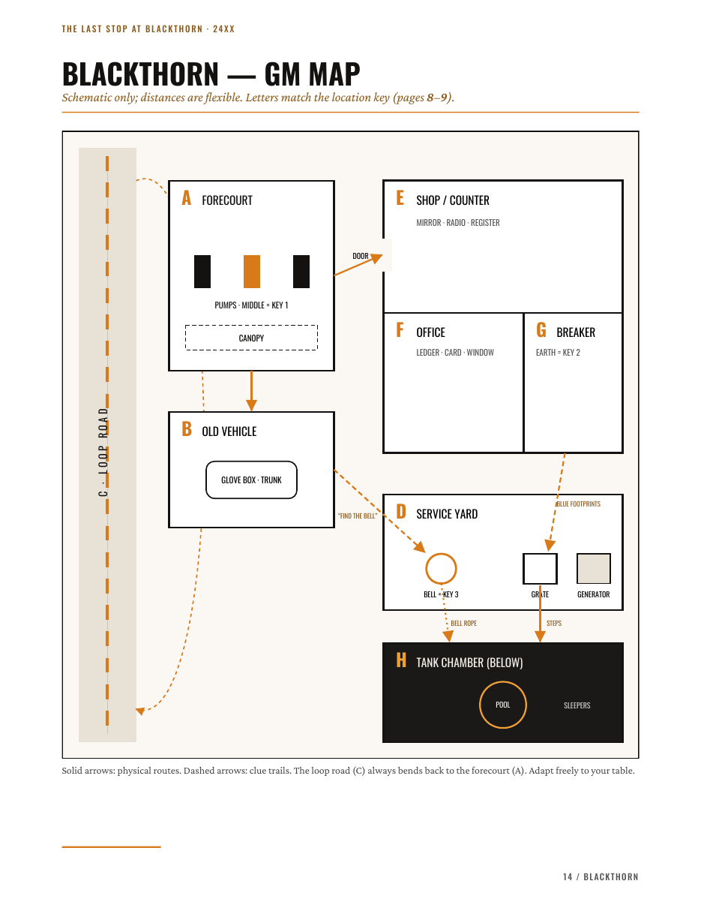

The Last Stop at Blackthorn
A 24XX roadside horror one-shot. The pumps are lit. The attendant says, “Back again?”
The road is empty. The fuel gauge is low. A lit service station waits where no station should be. Behind it sits a rusted copy of your own car, thirty years older.
A complete one-shot horror adventure with four ready-to-play travelers, three scenes, GM and player maps, evidence handouts and a one-page quick reference. Dread over gore.
Details
Content warning
Isolation, identity loss, implied disappearances, uncanny doubles, confinement. No graphic gore. Use your table’s safety tools.
Inside the PDF

01 · Cover 
02 · 24XX rules 
03 · Travelers 
04 · GM map


Credits
24XX rules are CC BY Jason Tocci.
The Last Stop at Blackthorn is an independent product for the 24XX rules (CC BY 4.0, https://creativecommons.org/licenses/by/4.0/), not affiliated with or endorsed by Jason Tocci.
Production note
The adventure text was written and edited under the publisher’s direction. The maps and layout are simple diagrams built in code.